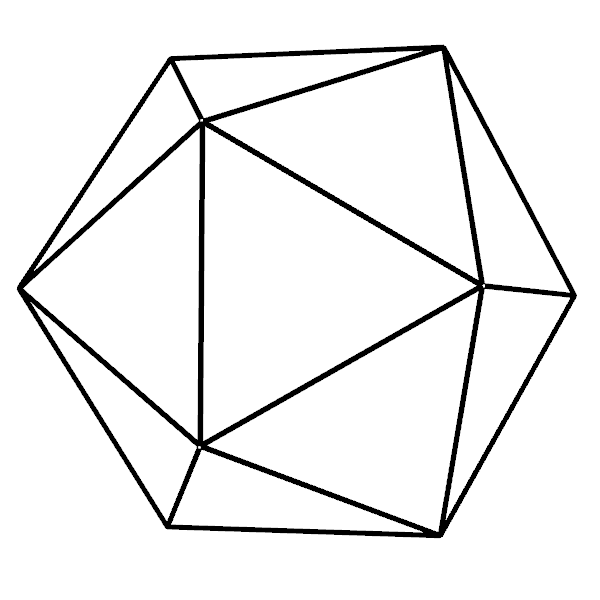

ADG Steering Committee
Zoltán Kovács (PHDL Linz, Austria), chair
Xiaoyu Chen (Beihang University, China)
Predrag Janičić (University of Belgrade, Serbia)
Hongbo Li (Chinese Academy of Sciences, China)
Vesna Marinković (University of Belgrade, Serbia)
Pedro Quaresma (University of Coimbra, Portugal)
Dongming Wang (Beihang University, China)
Jing Yang (Guangxi University for Nationalities, China)

ADG Foundation
(Arbeitskreis zur Automatisierten Deduktion in der Geometrie)
A-4020 Linz, Salesianumweg 3